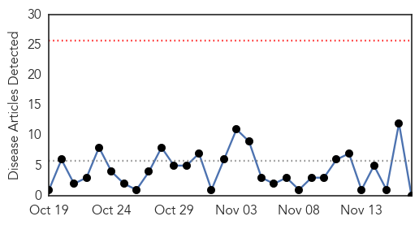
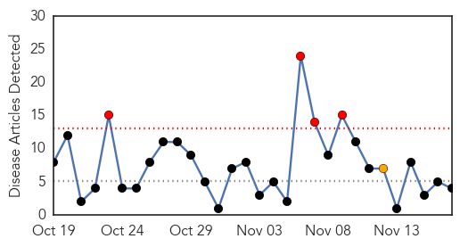
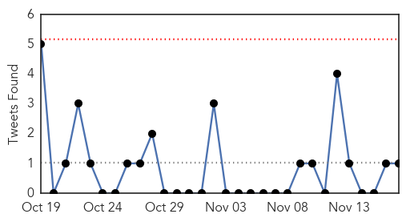
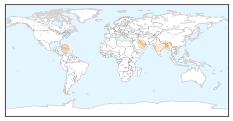

Hepatitis
30-Day Web Trend
0 alerts, 0 warnings

30-Day Twitter Trend
1 alerts, 0 warnings

Article Locations

Article Confidences

Top Articles:
-
No articles found for Nov 17, 2015
Top Tweets:
-
No tweets found for Nov 17, 2015
Cholera
30-Day Web Trend
4 alerts, 1 warnings

30-Day Twitter Trend
1 alerts, 0 warnings

Article Locations
Article Confidences

Top Articles:
Top Tweets:
- 0.759
- Cholera and blame in Haiti - The Lancet Infectious Diseases https://t.co/kkYd7MSf6a
- 0.683
- Haiti’s cholera outbreak: it’s time for some accountability! https://t.co/8NBznLtrBd in
- 0.573
- RT: .@FranQuigley on Haiti’s cholera outbreak: It’s time for some accountability https://t.co/ij6m3QQWTy UN justice https:…